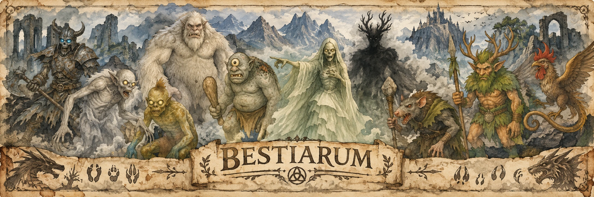

Thalenorische Akademie · Naturkundliche Sammlung
Das großeBestiariumvon Aleria
Von den Tieren unserer Wälder bis zu den Wesen jenseits der Sphären. Gesammelt, gezeichnet und bewahrt für jene, die genauer hinsehen.
Das Verzeichnis aufschlagenFünf Kapitel Eine Welt voller Begegnungen
„Wer die Kreaturen dieser Welt versteht, begreift die Gesetze, nach denen sie atmet.“Chronist Rhalem von Durn
Das illustrierte Verzeichnis
Welche Spur führt Euch hierher?
Durchstreift die Ordnungen oder sucht nach einem Namen.
Diese Spur verliert sich noch im Archiv.
Versucht einen anderen Namen oder eine andere Ordnung. Themen und Literatur findet Ihr weiter unten.
VI · Aus dem Studierzimmer
Die Themenwand
Manches Wesen versteht man erst, wenn man die Geschichten um es herum kennt. Ein Platz für Forschung, Überlieferungen und weiterführende Schriften.
Die sechs sphärenkundlichen Themen öffnen eigene Archivblätter. Noch ungeschriebene Forschungsnotizen und Werke bleiben als Vorschau vorgemerkt.
Keine Themen oder Literaturtitel zu dieser Suche.